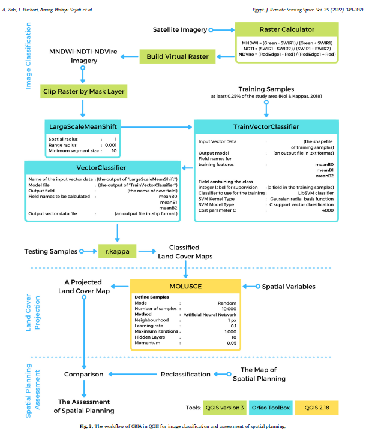

7 Classification:
Summary:
This week revolved around the theme of classification, with the primary focus of the lectures being on how remotely sensed data can be classified and how these classifications are applied. The second part of the week involved a practical session dedicated to classification methods using Google Earth Engine.
The lectures began with a real-world example of a Landsat-classified image illustrating urban expansion within the Perth metropolitan region. This was followed by another practical example showcasing the classification of data for anti-pollution and land-use/land-cover studies, using familiar methods like regression and introducing less familiar concepts such as honeycombing. Other real-life applications included using remote sensing to evaluate urban green spaces, monitor illegal deforestation, and detect illegal wood logging activities. These examples highlighted how classification methods play a pivotal role in addressing these challenges.
Additionally, the lectures covered various classification methodologies, such as machine learning and modeling techniques. Topics included classification and regression methods, regression trees, over fitting, random forests, supervised and unsupervised classification, and support vector machines.
Independent thought: The first part of the lecture was really engaging and captured my interest. However, the second part, particularly the methodology section, felt somewhat lot to process . I began noticing a sense of redundancy, as the same methodology had been previously introduced in the data science module. This overlap made the content feel slightly repetitive and added to my confusion. I found myself struggling to grasp several aspects, which made it more challenging to stay focused and fully understand the material.
7.1 Application:
7.1.1 Object-Based Image Analysis (OBIA) method in the open-source
Object-Based Image Analysis (OBIA) was used within the open-source software QGIS for classifying land cover and evaluating coastal spatial planning in the Semarang Metropolitan Region of Indonesia. The study compares the OBIA method to traditional pixel-based approaches, finding OBIA more accurate, especially for high-resolution imagery. Utilizing satellite data from 2015 and 2020, the researchers project future land cover changes to 2030 using algorithms in QGIS and then assess the concordance with the spatial plan for 2031, revealing a lack of consideration for rapid environmental shifts like increasing waterbodies. The research demonstrates a cost-effective methodology for developing countries to assess spatial planning and highlights the potential of QGIS as a substitute for commercial remote sensing software in such analyses. (Abdurrahman Zaki, Imam Buchori, Anang Wahyu Sejati, and Yan Liu, 2022)
7.1.2 There was improved Improved Accuracy with OBIA Methodology
Comparison of Methods:
Pixel-based methods often yield lower accuracy for high-resolution images due to the “salt-and-pepper effect”.
Object-Based Image Analysis (OBIA) in QGIS achieved higher overall accuracies:
2015 Imagery: 94.50% accuracy.
2020 Imagery: 90.98% accuracy.

7.2 Reflection
By the end of this week, I was kind of able to develop a solid understanding of the concepts that were introduced. this actually reminded of a previous experience where I conducted a classification for an environmental impact project. It took me about a week to classify the region of interest using QGIS, alternating between overlays of Bing Map and OpenStreetMap. Reflecting on this, I can confidently say that I will definitely use the classification methods I learned this week, as I believe they will significantly reduce the amount of time and effort required for similar tasks in the future. once you take samples everything get generated or you whereas for unsupervised you just need to allow the system carry out the task for you.
Additionally, I found that engaging with the practical aspects of classification was much easier than grasping the methodological concepts at first. The hands-on experience really helped solidify my understanding